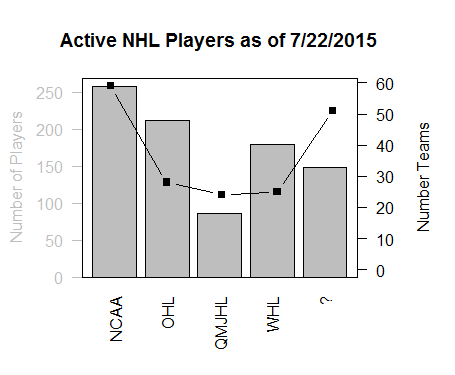

Many players, especially those that aren't marquee first-rounders, play multiple years in junior leagues or the college ranks. The purpose of this study was to objectively quantify the number of players from each amateur level, regardless of draft status. This study has an innate focus on the North American leagues as that was the initial question posed to us.
Our process
- Scrape the data (mostly R code discussion)
- Assign the teams to a league
- Associate teams with the scraped player data
- Finalize data into plot
